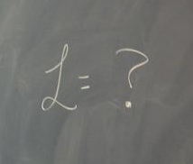

Theoretical particle physics at Cornell (2010 — )
 Advisor: Maxim PerelsteinThe Large Hadron Collider has thrust humanity into the TeV-scale era of particle physics, and with it we have discovered a new Higgs-like particle and set stronger limits on possible theories of supersymmetry (SUSY) and beyond-the-Standard-Model (BSM) physics. But while the experimental community continues to improve their searches for new physics, the lack of clear BSM discoveries at the LHC so far has made it apparent that if we are to discover new physics there, the theoretical community must continually develop new methods as well.
Tagging boosted top quarks from gluino cascade decays
with J. Berger, M. Perelstein, and A. SprayHigher collision energies at the LHC motivate the use of top tagging in BSM searches. Decays of new heavy particles can produce top quarks that are highly boosted in the lab frame, collimating the top's hadronic decay products into a single "fat jet" that can be separated from light quark jets by its three-pronged substructure and invariant mass. We particularly focused on SUSY searches for gluino pair production, where gluinos decay to top and stop, and stops decay to top and neutralino (all intermediate particles on-shell), resulting in a 2t + 2t̅ + 2χ0 final state with up to four boosted tops. These boosted tops can be tagged and used to identify the SUSY signal events amidst the Standard Model background.
We used FeynRules and MadGraph/MadEvent for Monte Carlo event generation, Prospino for NLO cross sections, Pythia for hadronization, and FastJet for jet clustering and its implementation of the Johns Hopkins top tagger. At the 7 TeV LHC, we found that requiring two top-tagged jets and MET > 100 GeV gave us sensitivity to gluino masses up to 1 TeV with 30 fb-1 of data. At the 14 TeV LHC, requiring three top-tagged jets and MET > 175 GeV gave us sensitivity to gluino masses up to 1.4 TeV, with S/B > 10 throughout the probed region, after just 10 fb-1 of data. [arXiv:1111.6594]
Markov Chain Monte Carlo in the pMSSM
with M. PerelsteinPreviously, M. Blanke, D. Curtin, and M. Perelstein proposed the SUSY-Yukawa sum rule: the cancellation of the quadratic divergence in the Higgs mass uniquely fixes a particular combination of stop and sbottom masses and mixing angles, which they denoted by Υ (Upsilon), at tree-level. However, radiative corrections make the prediction for Υ dependent on other SUSY parameters. It thus became important to determine how much Υ is allowed to vary over the parameter space of the phenomenological Minimal Supersymmetric Standard Model (pMSSM).
A brute-force scan over this multi-dimensional space would be beyond our computational limits, but Markov Chain Monte Carlo (MCMC) allows us to only sample the experimentally allowed regions, and yields a probability distribution for Υ for any set of experimental inputs. I implemented the MCMC scan in C++, with the GNU Scientific Library and calls to SuSpect for the calculation of MSSM spectra. We demonstrated that future measurements of SUSY particle properties at the 14 TeV LHC and a proposed 500 GeV electron-positron collider would nicely constrain the SUSY prediction for Υ. [arxiv:1201.5839]
Previous research
I feel especially fortunate to have spent my undergraduate and early graduate years researching in so many different areas of physics. Every one of these postings has contributed to the researcher I am today.
Experimental particle physics at Cornell (2009)
Advisors: Ritchie Patterson and Lawrence GibbonsI did some work evaluating the efficiency of proposed event selection cuts for SUSY searches in the same-sign di-electron channel, for the CMS experiment.
Accelerator physics at Cornell (2008 — 2009)
Advisor: Georg HoffstaetterWe examined the damaging effects of nonlinear dynamics and coherent synchrotron radiation on electron beams for the proposed Energy Recovery Linac (ERL), a next-generation ultra-high brilliance synchrotron light source.
Experimental particle physics at CERN (REU 2007)
Advisor: Sarka TodorovaI designed a Kalman filter for software-based reconstruction of muon tracks and detection of misalignments in the muon chamber, for the ATLAS experiment.
Theoretical particle physics at Michigan State (2006 — 2008)
Advisor: Wayne RepkoWe used software to model the energy levels of charmonia and bottomonia by perturbative and non-perturbative methods, incorporating angular momentum f-states. We then extended this theoretical framework to encompass unequal-mass mesons. [Phys. Rev. D80 034012 (2009), arXiv:0903.0551]
Theoretical biophysics at Los Alamos National Laboratory (REU 2006)
Advisor: William Hlavacek, T-6 GroupWe developed a theoretical model for the early signal transduction pathway that activates CD4 T-cells, an important first alarm in the immune system, and examined the viability of other proposed models.
Experimental particle physics at Indiana (REU 2005)
Advisor: Mark MessierWe investigated an unexplained shift of the neutrino energy peak in data from the MINOS Near detector at Fermilab.
Experimental nuclear physics at Michigan State (2004 — 2006)
Advisor: Betty Tsang, National Superconducting Cyclotron LaboratoryWe developed software to analyze experimental data on nuclear cross-sections and spectroscopic factors of common and rare nuclei. [Phys. Rev. C73 044608 (2006), arXiv:nucl-ex/0511023]